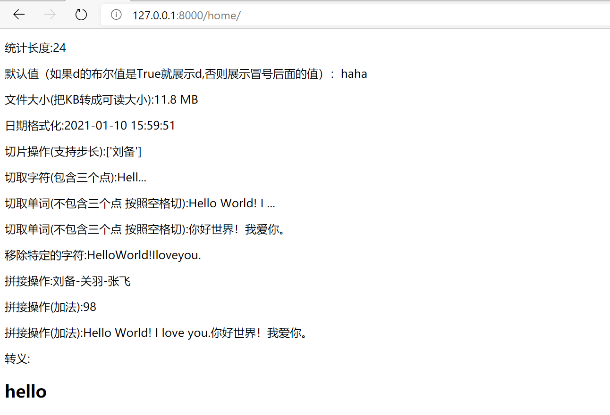

模板层
一、静态文件配置
1.创建静态文件目录
| mkdir mysite/app/static
# 网站使用的静态文件(css,js,img)一般都放在static目录下
|
2. 修改配置文件
| # 如果想访问静态文件，模板文件中的静态文件路径就必须以static开头，然后从STATICFILES_DIRS中给的路径从上到下依次查找指定的静态文件
STATIC_URL = '/static/'
# 添加以下内容
STATICFILES_DIRS = [
os.path.join(BASE_DIR, 'static'),
os.path.join(BASE_DIR, 'static1'),
os.path.join(BASE_DIR, 'static2'),
]
|
3. 静态文件动态解析
template/index.html
1
2
3
4
5
6
7
8
9
10
11
12
13
14
15
16
17
18
19
20
21
22
23
24 | <!DOCTYPE html>
<html lang="en">
<head>
<meta charset="UTF-8">
<title>登录</title>
{% load static %} <!--类似于导入模块，可以动态解析配置文件中STATIC_URL的值-->
<link rel="stylesheet" href="{% static 'bootstrap-3.3.7-dist/css/bootstrap.min.css' %}">
<script src="{% static 'bootstrap-3.3.7-dist/js/bootstrap.min.js' %}"></script>
</head>
<body>
<h1 class="text-center">登陆</h1>
<div class="container">
<div class="row">
<div class="col-md-8 col-md-offset-2">
<form action="" method="post">
<p>username:<input type="text" name="username" class="form-control"></p>
<p>password:<input type="password" name="password" class="form-control"></p>
<input type="submit" class="btn btn-success btn-block">
</form>
</div>
</div>
</div>
</body>
</html>
|
二、模板语法
1. 语法
2. 值传递
模版语法可以传递的后端python数据类型
视图函数
1
2
3
4
5
6
7
8
9
10
11
12
13
14
15
16
17
18
19
20
21
22
23
24
25
26
27
28
29
30
31
32
33 | from django.shortcuts import render
def home(request):
n = 18
f = 9.99
s = 'Hello World!'
b = True
l = ['刘备', '关羽', '张飞']
t = ('吴', '蜀', '魏')
d = {'username': 'Tom', 'age': '17'}
st = {'a', 'b', 'c'}
def foo():
return 'func:foo'
class Bar:
def func(self):
return 'Bar-->func'
@staticmethod
def static_func():
return 'Bar-->static_func'
@classmethod
def class_func(cls):
return 'Bar-->class_func'
def __str__(self):
return 'Class Bar'
obj = Bar()
return render(request, 'home.html', locals())
|
模板
1
2
3
4
5
6
7
8
9
10
11
12
13
14
15
16
17
18
19
20
21
22
23 | <!DOCTYPE html>
<html lang="en">
<head>
<meta charset="UTF-8">
<title>home</title>
</head>
<body>
<p>{{ n }}</p>
<p>{{ f }}</p>
<p>{{ s }}</p>
<p>{{ b }}</p>
<p>{{ l }}</p>
<p>{{ d }}</p>
<p>{{ t }}</p>
<p>{{ st }}</p>
<p>{{ foo }}</p>
<p>{{ Bar }}</p>
<p>{{ obj }}</p>
<p>{{ obj.func }}</p>
<p>{{ obj.static_func }}</p>
<p>{{ obj.class_func }}</p>
</body>
</html>
|
- 传递函数名会自动加括号调用，但是模版语法不支持给函数传额外的参数
- 传类名的时候也会自动加括号调用(实例化)
- 内部能够自动判断出当前的变量名是否可以加括号调用，如果可以就会自动执行（针对的是函数名和类名）
渲染后的页面

3. 取值
django模版语法的取值是固定的格式，只能采用句点符(.)
.键：{{ d.username }}.索引：{{ d.hobby.3.info }}
4. 过滤器
语法：{{数据|过滤器:参数}}
4.1 内置过滤器
视图层
1
2
3
4
5
6
7
8
9
10
11
12
13
14 | #filename: urls.py
from django.shortcuts import render
import datetime
def home(request):
n = 88
s = 'Hello World! I love you.'
msg = "你好世界！我爱你。"
l = ['刘备', '关羽', '张飞']
file_size = 12321483
current_time = datetime.datetime.now()
h = '<h2>hello</h2>'
return render(request, 'home.html', locals())
|
模板层
1
2
3
4
5
6
7
8
9
10
11
12
13
14
15
16
17
18
19
20
21
22 | <!DOCTYPE html>
<html lang="en">
<head>
<meta charset="UTF-8">
<title>home</title>
</head>
<body>
<p>统计长度:{{ s|length }}</p>
<p>默认值（如果d的布尔值是True就展示d,否则展示冒号后面的值）：{{ d|default:"haha" }}</p>
<p>文件大小(把KB转成可读大小):{{ file_size|filesizeformat }}</p>
<p>日期格式化:{{ current_time|date:'Y-m-d H:i:s' }}</p>
<p>切片操作(支持步长):{{ l|slice:'0:2:2' }}</p>
<p>切取字符(包含三个点):{{ s|truncatechars:7 }}</p>
<p>切取单词(不包含三个点 按照空格切):{{ s|truncatewords:3 }}</p>
<p>切取单词(不包含三个点 按照空格切):{{ msg|truncatewords:3 }}</p>
<p>移除特定的字符:{{ s|cut:' ' }}</p>
<p>拼接操作:{{ l|join:'-' }}</p>
<p>拼接操作(加法):{{ n|add:10 }}</p>
<p>拼接操作(加法):{{ s|add:msg }}</p>
<p>转义:{{ h|safe }}</p>
</body>
</html>
|
渲染结果

后端转义
| from django.shortcuts import render
from django.utils.safestring import mark_safe
def home(request):
res = mark_safe('<h1>Hello</h1>')
return render(request, 'home.html', locals())
|
| <!DOCTYPE html>
<html lang="en">
<head>
<meta charset="UTF-8">
<title>home</title>
</head>
<body>
<p>后端转义:{{ res }}</p>
</body>
</html>
|
4.2 自定义过滤器
步骤：
-
在应用下创建一个名字”必须“叫templatetags的文件夹
-
在该文件夹内创建“任意”名称的py文件eg:mytag.py
-
在该py文件内"必须"先书写下面两句话(单词一个都不能错)
python
from django import template
register = template.Library()
定义过滤器
| #filename: templatetags/mytag.py
from django import template
register = template.Library()
@register.filter(name='my_add') # name="过滤器的名称"
def my_sum(v1, v2):
return v1 + v2
|
使用
| {% load mytag %}
<p>{{ n|my_add:66 }}</p>
|
5. 标签
5.1 for
| {% for foo in l %}
<p>{{ foo }}</p>
{% endfor %}
|
for循环内置变量
| {% for foo in l %}
<p>{{ forloop }}</p>
{% endfor %}
|
| {'parentloop': {}, 'counter0': 0, 'counter': 1, 'revcounter': 3, 'revcounter0': 2, 'first': True, 'last': False}
{'parentloop': {}, 'counter0': 1, 'counter': 2, 'revcounter': 2, 'revcounter0': 1, 'first': False, 'last': False}
{'parentloop': {}, 'counter0': 2, 'counter': 3, 'revcounter': 1, 'revcounter0': 0, 'first': False, 'last': True}
|
处理字典
| {% for foo in d.keys %}
<p>{{ foo }}</p>
{% endfor %}
{% for foo in d.values %}
<p>{{ foo }}</p>
{% endfor %}
{% for k,v in d.items %}
<p>{{ k }}-->{{ v }}</p>
{% endfor %}
|
empty
| {% for foo in ll %}
<p>{{ forloop }}</p>
{% empty %}
<p>循环对象没有内容，就显示这行</p>
{% endfor %}
|
5.2 if
| {% if n > 80 %}
<p>真棒</p>
{% elif n > 60 %}
<p>还行</p>
{% else %}
<p>努力吧，少年!</p>
{% endif %}
|
支持的运算符
| in
or and not
==, !=, <, >, <=, >=
|
5.3 with起别名
在with语法内就可以通过as后面的别名快速的使用到前面非常复杂获取数据的方式
| {% with l|length as count %}
<p>列表长度:{{ count }}</p>
{% endwith %}
|
5.4 自定义标签
自定义标签的参数可以有多个
| # filename: templatetags/mytag.py
from django import template
register = template.Library()
@register.simple_tag(name='my_plus') # name="标签的名称"
def plus_plus(a, b, c, d):
return '%s-%s-%s-%s' % (a, b, c, d)
|
使用
| {% load mytag %}
<p>{% my_plus 'my' 'age' 'is' 18 %}</p>
|
5.5 自定义inclusion_tag
当html页面某一个地方的页面需要传参数才能够动态的渲染出来，并且在多个页面上都需要使用到该局部 那么就考虑将该局部页面做成inclusion_tag形式
内部原理：
- 先定义一个方法
- 在页面上调用该方法并且可以传值
- 该方法会生成一些数据然后传递给一个html页面
- 之后将渲染好的结果放到调用的位置
定义inclusion_tag
| from django import template
register = template.Library()
@register.inclusion_tag('menu_list.html') # 数据返回给哪个页面去处理
def show(n):
data = ['第{}项'.format(i) for i in range(n)]
return locals() # 将data传递给home.html
|
show函数处理的结果在menu_list.html中处理
| {% for foo in data %}
<li>{{ foo }}</li>
{% endfor %}
|
渲染后的页面在其他页面中使用
| <!DOCTYPE html>
<html lang="en">
<head>
<meta charset="UTF-8">
<title>主页</title>
</head>
<body>
{% load mytag %}
{% show 5 %}
</body>
</html>
|
访问结果

三、模板继承
当网站页面整体都差不多，只是某一些局部在做变化 ，就可以用到模板继承。
- 先定义一个模板页面，在模版页面上提前划定可以被修改的区域
- 子页面继承模板，在划定的区域定制修改子页面的内容
- 一般情况下模版页面上应该至少有三块可以被修改的区域（css，js，html）
1. 模板页面的定义
1
2
3
4
5
6
7
8
9
10
11
12
13
14
15
16
17
18 | <!DOCTYPE html>
<html lang="en">
<head>
<meta charset="UTF-8">
<title>Title</title>
{% block css %}
{% endblock %}
</head>
<body>
{% block content %}
<p>模板页面内容</p>
{% endblock %}
{% block js %}
{% endblock %}
</body>
</html>
|
2. 子页面继承
| {% extends 'base.html' %}
{% block content %}
<p>子页面内容</p>
{% endblock %}
|
子页面中继续引用模板的内容
| {% extends 'base.html' %}
{% block content %}
子页面内容
{{ block.super }}
子页面内容
{% endblock %}
|
四、模板导入
将页面的某一个局部当成模块的形式，哪个地方需要就可以直接导入使用即可
| {% include 'menu.html' %}
|
最后更新: 2021年5月22日